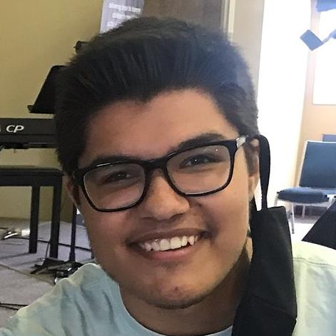

Aden Barrios

Email: adenbarrios1@gmail.com
Contact Info
Summary
- Upcoming motivated and hardworking web designer
Education
- Associates of Applied Science in Game Design - Full Sail University, (May 2021 - June 2022)
Work Experience
BestBuy
SWAT - Shift Lead (Oct 2022 - Present)
- Write schedules for store team based on weekly needs and goals
- Conducted multiple interviews while onboard new team members
- Create and present presentations to leadership, based on stores shrink metrics
- Conduct security testing on stores safety and emergency equipment
- Adjusted and maintained all store inventory
Garden Ground
Florist Assistant (Dec 2022 - Present)
- Coordinate with team members, venue staff, and vendors on placement of floral and greenery
- Prepped delivered floral and greenery shipments for floral designer
- Create floral arraignments based on customer needs and wants
JR Automation
Apprentice Electrian (July 2020 - May 2021)
- Install electrical component and fixtures on automation equipment
- Create and update safety signage for automation equipment
- Worked with teams to accomplish project goals before deadlines
Skills
- Collaborative Vision: Ability to work effectively with diverse teams to achieve team's aspirations
- Adaptability: Quickly identifying problems while coming up with effective solutions
- Critical Thinking: Identifying the root causes of an issue and then break down the problem
- Communication: Receiving feedback openly and using it to improve performance
- Time Management: Establishing clear, achievable objectives for what needs to be done
Projects
Varsity Esports Athlete and Mentor
Member and mentor for Full Sail's Esports organization Armada during attendance and after graduation
https://armada.fullsail.edu